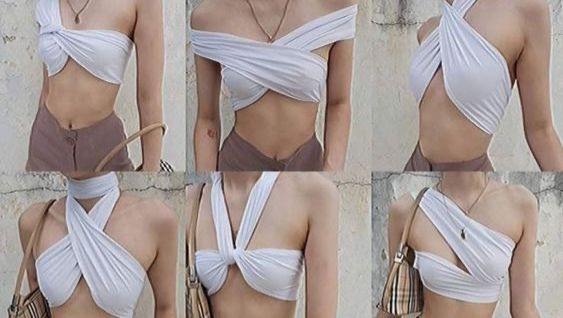
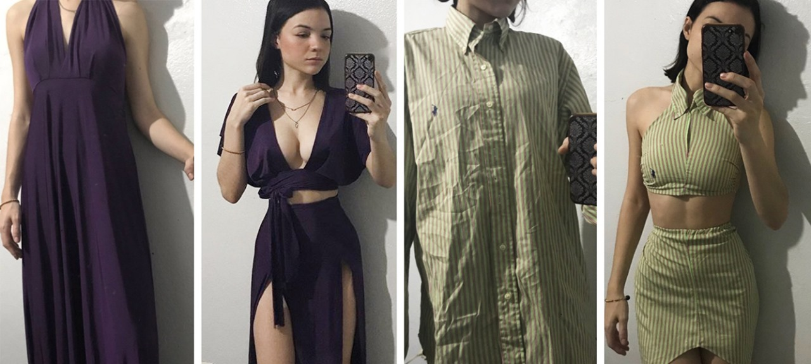

¿Tenés prendas guardadas que ya no usás? Esa camiseta que te encantaba pero tiene un botón suelto. Ese jean que ya no te queda igual. Esa camisa que te cansó. No las tires. Dales una segunda vida.
Porque la ropa no es desechable. Tiene historia, tiene energía, tiene potencial. Y vos tenés el poder de transformarla.
Ideas fáciles para revivir tus prendas
1. Repará lo que puedas
Un botón suelto, un dobladillo roto, una cremallera que no cierra. Arreglar esas pequeñas fallas hace que la prenda dure mucho más.
2. Rediseñá o personalizá
Agregale un parche, pintala con textil, cortala para que quede "cropped". En el estilo urbano, eso puede darle una estética totalmente nueva.
3. Intercambiá con tu parche
Organizá un "swap" de ropa con tus amigas, tu combo, tu comunidad. Traés lo que ya no usás y te llevás algo que para otra persona ya no tenía valor, pero para vos sí.
4. Vendela o donala
Si ya no te gusta pero está en buen estado, vendela de segunda mano o donala a proyectos que la resignifiquen. Así la prenda sigue viva y no termina en la basura.
5. Upcycling creativo
Convertí jeans viejos en shorts, camisetas en bolsas reutilizables, mezclá telas para crear una prenda híbrida.
6. Cuidá tus prendas para que duren
Lavá con cariño, seguí las instrucciones de cuidado, evitá secadoras fuertes. Mientras más dure la prenda, menos impacto genera. Y más historia acumula.
7. Convertí tu ropa en arte o memoria
¿Tenés una camiseta que usaste en un momento especial? Enmarcala. ¿Un vestido que ya no usás pero te recuerda a alguien? Convertilo en cojín. La ropa también puede ser archivo emocional.
8. Creá tu propio estilo con lo que ya tenés
Combiná prendas viejas de formas nuevas. Usá capas, accesorios, mezclá texturas. Lo vintage, lo intervenido, lo heredado… todo suma.

¿Por qué hacerlo?
- Ahorro de dinero: reutilizar significa menos compras nuevas.
- Menor impacto ambiental: menos residuos textiles, menos consumo de agua y energía.
- Estilo único: las prendas personalizadas o usadas tienen carácter, autenticidad y cuentan una historia.
- Comunidad: al intercambiar o donar, generás conexiones y fomentás una cultura urbana consciente.
- Resistencia creativa: transformar lo que otros desechan es un acto político, ecológico y emocional.
Vestirse no es solo cubrirse. Es expresarse. Es cuidar. Es resistir.
Dale una segunda vida a tu ropa. Y de paso, a tu forma de habitar el mundo.
